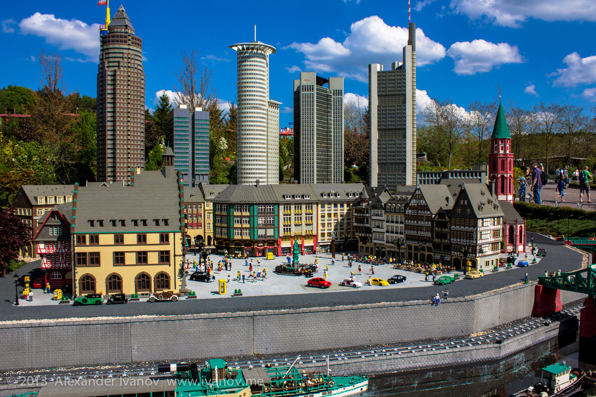
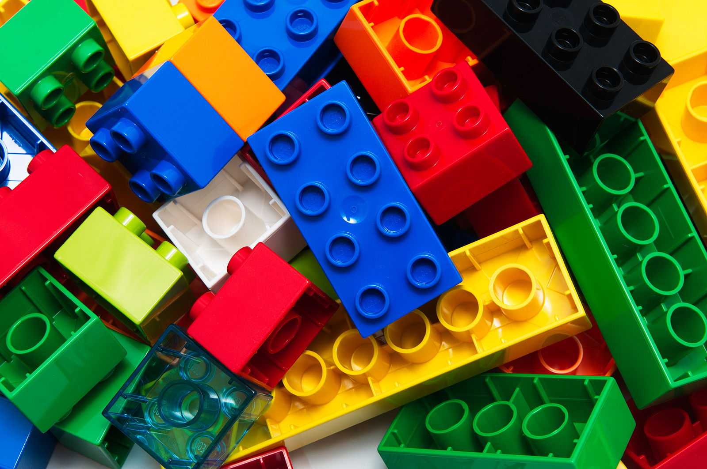

LEGO (от дат. Leg-godt — «играй хорошо», рус. ле́го) — серии конструктора, представляющие собой наборы деталей для сборки и моделирования разнообразных предметов. Наборы LEGO выпускает группа компаний LEGO Group, головной офис которой находится в Дании. Компания была основана в 1932 году, и её название выглядит и звучит как латинское (а также итальянское) слово lego - собираю, хотя первоначально она выпускала не конструкторы, а обычные деревянные игрушки.
Основным продуктом компании LEGO являются разноцветные пластмассовые кирпичики, маленькие фигурки и т. д. Из LEGO можно собрать такие объекты, как транспортные средства, здания, а также движущихся роботов. Все, что построено, затем можно разобрать, а детали использовать для создания других объектов.
Компания LEGO начала производство пластмассовых кирпичиков в 1949 году. С тех пор LEGO расширила сферу своей деятельности, создавая фильмы, игры, конкурсы, а также семь тематических парков развлечений, первым и самым большим из которых является Legoland на полуострове Ютландия, в небольшом городке Биллунд, — город, полностью построенный из конструктора LEGO.
Основой наборов является кирпичик LEGO — деталь, представляющая собой полый пластмассовый блок, соединяющийся с другими такими же кирпичиками на шипах. В наборы также входит множество других деталей: фигурки людей и животных, колёса и так далее. Существуют наборы, в которые входят электродвигатели, различного рода датчики и даже микроконтроллеры. Наборы позволяют собирать модели автомобилей, самолётов, поездов, кораблей, зданий, роботов. LEGO воплощает идею модульности, наглядно демонстрирующую детям то, как можно решать некоторые технические проблемы, а также прививает навыки сборки, разборки и ремонта техники.s
Компания LEGO Group была основана в 1932 году. Её основателем стал датчанин Оле Кирк Кристиансен[1]), являвшийся в то время бригадиром команды плотников и столяров[1]. Задача, которая стояла перед работниками компании (поначалу она состояла всего из 7 человек), — создать игрушки, развивающие воображение, изобретательность и творческие способности ребёнка.